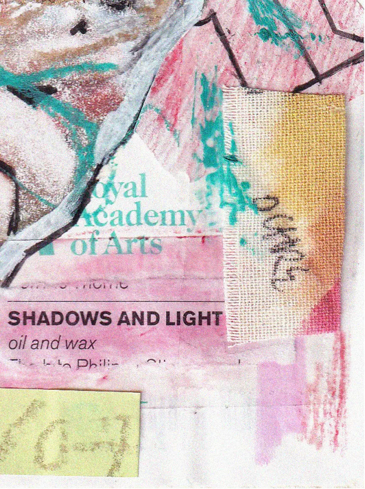
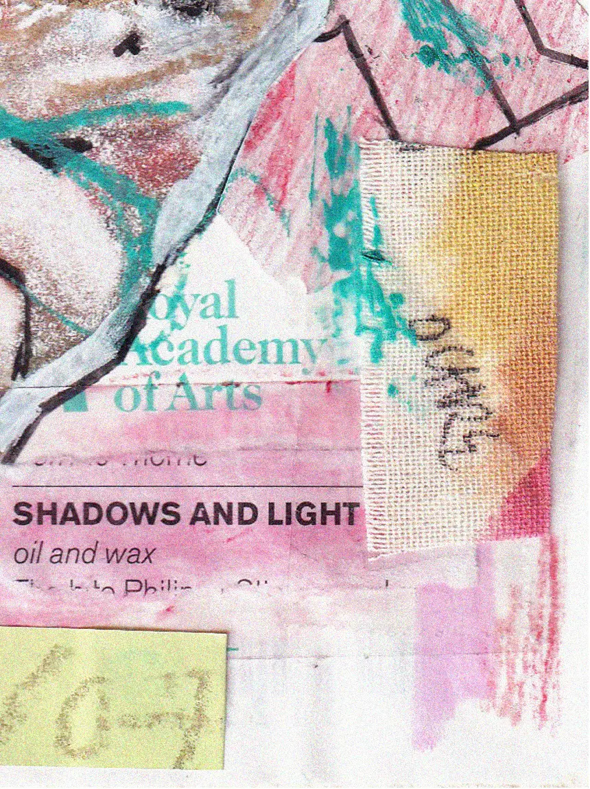

Clara Robson | playful yet powerful design
angry collage
 

This is a personal piece and a reaction to my friend and I being catcalled from a car on my way home after seeing 2024’s Summer Exhibition at the RA. After seeing such creativity, purpose and intention, it was an intense juxtaposition. I drew on this experience immediately to create something from my anger.
I used paper I had just bought from the RA, pieces of the programme and other ephemera, as well as a snippet from a story I wrote at age 10, even tracing my exact, now alien, handwriting. I wanted to translate the vulnerability I felt in that moment. I often contradict stimulating, colourful visuals with darker themes, replicating the messiness of our brains and real life.